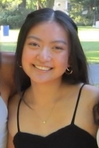

Meet Gianna Leidich
About Me
Gianna Leidich is a junior at the University of Massachusetts-Amherst studying English and computer science, and completing the Professional Writing and Technical Communications certificate. She is interested in web development, digital design, and social media management.
My Story
After entering UMass Amherst as a primary computer science major and taking a course in human-computer interaction, Gianna decided to center her studies around information design and user experience research. Recently, Gianna has shifted her focus to applying the theories and practices she has learned inside the classroom to real-world projects via internships, student organizations, and personal projects.
Gianna is currently the Digital Design and Communications Intern for the UMass Center for Data Science and web designer for Jabberwocky, UMass’s undergraduate literary journal.
When Gianna isn't working or studying, she enjoys going out with friends, playing video games, or crocheting.
Contact Me
Connect with Gianna Leidich on LinkedIn or reach her via email.